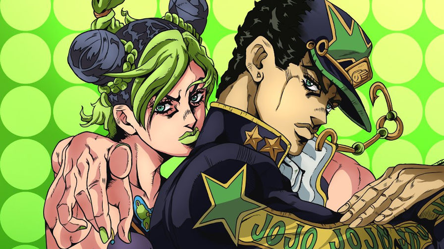
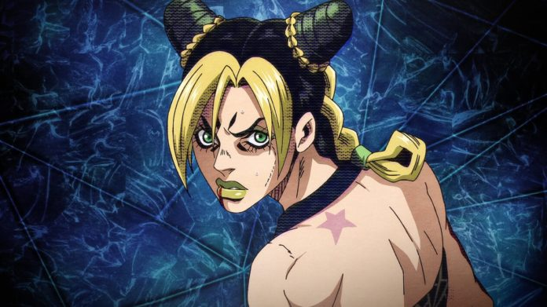

JoJo's Bizarre Adventure
Stone Ocean (ストーンオーシャン Sutōn Ōshan) é a sexta parte de JoJo's Bizarre Adventure, serializado na Weekly Shōnen Jump de janeiro de 2000 a abril de 2003. Originalmente intitulada JoJo's Bizarre Adventure Part 6 Jolyne Cujoh: Stone Ocean (ジョジョの奇妙な冒険 第6部 空条徐倫 ―『石作りの海 (ストーンオーシャン)』JoJo no Kimyō na Bōken Dai Roku Bu Kūjō Jorīn -"Sutōn Ōshan"-), o arco abrange 158 capítulos e é precedido por Vento Aureo.
A Parte 6 é a última parte ambientada na primeira linha do tempo de JoJo – da Parte 7 em diante, a história se passa em um universo separado.
Resumo
A filha de Jotaro Kujo, Jolyne Cujoh, é condenada por assassinato em segundo grau e sentenciada a 15 anos na Prisão Green Dolphin Street, assumindo inconscientemente a culpa por seu namorado. Antes de seu encarceramento, Jolyne pica o dedo em um pingente dado a ela por seu pai distante, que revela conter um fragmento de uma Flecha que concede Stand. Jolyne manifesta seu Stand Stone Free antes de ser visitada por Jotaro, que tenta libertar sua filha enquanto revela que ela foi incriminada por um seguidor de Dio Brando. Mas acabou sendo uma armadilha preparada para Jotaro, pois um Stand chamado Whitesnake extrai as memórias de Jotaro e Star Platinum na forma de dois discos, deixando-o em coma. Jolyne percebe a extensão do amor de seu pai por ela e resolve recuperar seus discos do usuário do Whitesnake. Ela é acompanhada por Emporio Alniño, um menino nascido na prisão cuja mãe foi morta por Whitesnake, Ermes Costello, que veio para a prisão para assassinar o assassino de sua irmã, e Foo Fighters, uma colônia de plâncton que Whitesnake deu senciência para guardar seus discos de Stand roubados e pegou sobre o corpo de um presidiário falecido. Eles logo se juntam a dois presos: um amnésico que controla o clima, chamado Weather Report, e Narciso Anasui, que tem um amor não correspondido por Jolyne.
O usuário do Whitesnake acaba sendo um capelão da prisão chamado Enrico Pucci. Pucci procurou as memórias de Jotaro para aprender os detalhes do plano escrito de Dio para estabelecer o paraíso na Terra, que Jotaro havia destruído vinte e dois anos antes, após matar Dio. Depois de recuperar o disco Stand de Jotaro e enviá-lo para a Fundação Speedwagon, Jolyne descobre que Whitesnake usou um subordinado para reviver um dos ossos de Dio, que eventualmente absorve as almas de vários prisioneiros e forma um homúnculo, chamado de Bebê Verde. O grupo de Jolyne aproveita o Bebê Verde como isca para o usuário do Whitesnake, mas Foo Fighters e Anasui são mortalmente feridos na batalha que se segue, com Foo Fighters usando o que resta de sua força para salvar a vida de Anasui e recuperar o disco de memória de Jotaro. Pucci se funde com sucesso com o Bebê Verde e deixa a prisão rumo ao Cabo Canaveral, onde se espera que a lua nova traga o paraíso que Pucci procura.
Jolyne e seus aliados escapam da prisão para perseguir Pucci até Orlando, Flórida, organizando a entrega do disco de memória de Jotaro à Fundação Speedwagon para reanimá-lo enquanto lidava com os subordinados finais de Pucci, três filhos ilegítimos de Dio. Weather Report eventualmente recupera seu próprio disco de memória e relembra seu passado trágico como Wes Bluemarine, o irmão gêmeo há muito perdido de Pucci. Weather Report libera toda a extensão de sua habilidade em Orlando antes de morrer em um confronto com Pucci, usando seus momentos finais para extrair seu disco Stand para seus aliados usarem. Quando Pucci chega ao Cabo Canaveral, Whitesnake passa por uma evolução para o C-MOON, que manipula a gravidade, e domina o grupo de Jolyne. Embora Jotaro chegue a tempo de salvar sua filha, Pucci percebe que ele pode usar C-MOON para replicar a gravidade da lua nova permitindo-lhe completar a evolução de seu Stand para Made in Heaven que pode acelerar exponencialmente o tempo. O grupo toma uma posição desesperada contra o Stand completo de Pucci, mas a maior parte do grupo é logo morta. Jolyne se sacrifica para permitir que Emporio escape como o único sobrevivente.
O Stand de Pucci acelera o tempo até o fim do universo, com um novo ciclo de tempo criando uma nova realidade onde todos os sobreviventes do universo anterior têm uma precognição subconsciente de seu destino. Pucci tenta matar Emporio para amarrar pontas soltas, apenas para inadvertidamente inserir o disco Stand do Weather Report na cabeça da criança, mudando seu destino. Pucci acelera o tempo mais uma vez, mas Emporio usa o Weather Report para aumentar a concentração do oxigênio circundante a uma quantidade letal. Pucci envenenado e paralisado, incapaz de cancelar a habilidade de seu Stand, implora a Emporio para poupá-lo até que ele possa tornar o efeito de Made in Heaven permanente. Emporio recusa e declara que o destino segue o caminho da justiça enquanto o Weather Report destrói a cabeça de Pucci no chão.
Após o segundo renascimento do universo, Emporio se encontra em um posto de gasolina perto da Prisão Green Dolphin Street, onde encontra uma carona chamado Eldis, que tem uma estranha semelhança com Ermes. Quando começa a chover, os dois oferecem carona a um casal chamado Irene e Anakiss, parecido com Jolyne e Anasui, que estão a caminho de encontrar o pai de Irene para sua bênção conjugal. Empório, reconhecendo as reencarnações de seus antigos amigos, se reintroduz em prantos a Irene. O grupo parte no carro de Anakiss, pegando outro carona parecido com o Weather Report antes de partir na chuva.